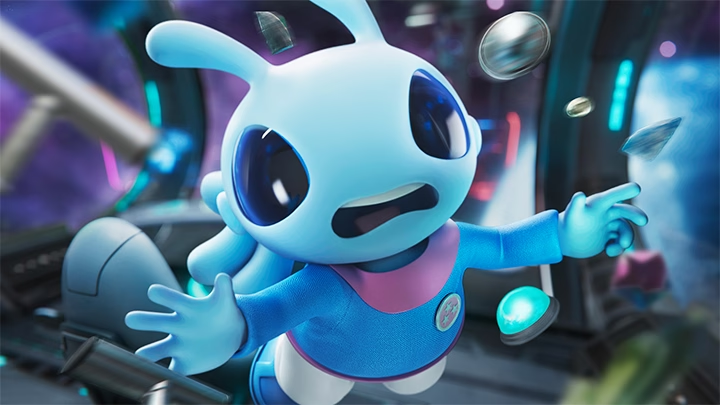

Notre extraterreste humanoïde arrive désespéré sur Uranus, il cherche en vain son ami.
Mais soudain il entand un bruit dans son dos, se retourne, et là, sous ses yeux un petit être qui le regarde avec de grand yeux.
Ça y est !! Il a trouvé son ami!